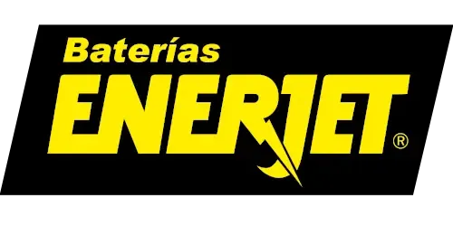
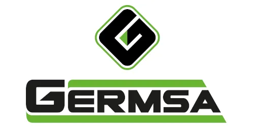

Pasión, historia y velocidad
SIN LÍMITES.SIN FRONTERAS.
El desafío de las rutas del Perú. Una historia que se escribe kilómetro a kilómetro.
Descubre las rutasLa leyenda continúa
Rally
Caminos
del Inca 2026.
54.ª EDICIÓN
El Rally Caminos del Inca volverá a encender los motores para su edición 54, una de las competencias automovilísticas más desafiantes y emocionantes de Sudamérica. Este año, la carrera promete ser un espectáculo inolvidable, reuniendo a los mejores pilotos nacionales e internacionales en un recorrido épico que atraviesa diversas regiones del Perú.
07 — 18 OCT
Perú · 2026
Valor · Técnica · Resistencia
Los protagonistas del desafío.
Detrás de cada curva hay preparación, estrategia y un equipo que comparte la misma pasión.
Juntos en cada kilómetro
PATROCINADORES Y ALIADOS

